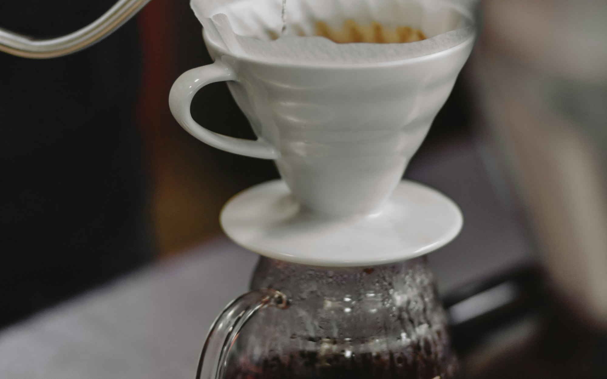
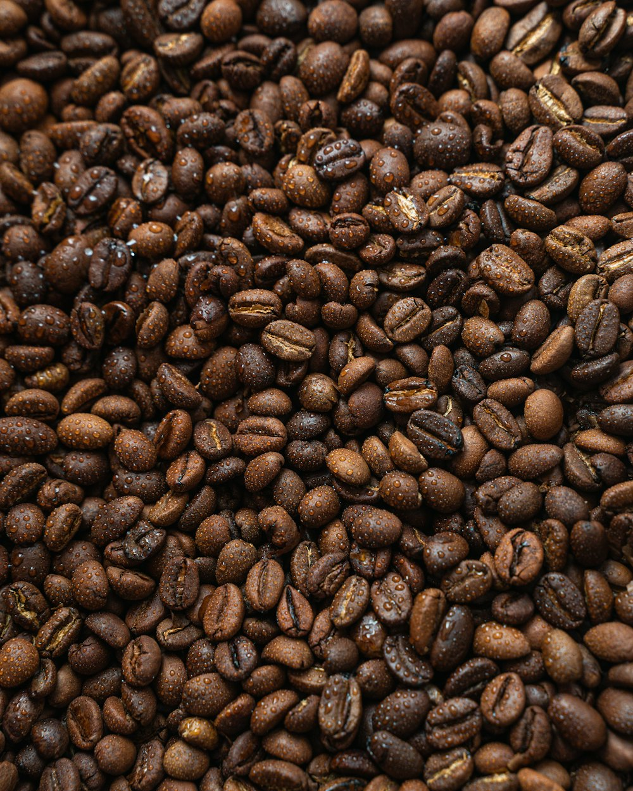

Pour Over
Kenyan Morning
Kiambu AA · Kenya
Blackcurrant and grapefruit up front, a syrupy body and a long, sweet tomato-leaf finish.

A private coffee tasting journal
Brewlog keeps a quiet record of what you brewed, how you brewed it and how it tasted, so your best cup is never a happy accident again.
What it keeps

Bean, origin, method, roast, a rating out of five beans and your tasting notes, dated the day you brewed it.
Search by name, filter by method, roast or rating, and sort by date or score. They all work together.
Espresso to cold brew out of the box. Add your own, rename them, retire them. Your history follows along.
One journal, one person. It runs on your own machine and every entry is kept safe in your own database.
How it works
Pull the shot, bloom the pour over, press the plunger. Nothing changes at the counter.
Name the brew, pick the method and roast, tap a rating and jot what you tasted. Today’s date is filled in for you.
Sort by rating, filter to five beans, and brew that perfect Kenyan again, exactly the way you did.
Open the journal and log today’s brew. It takes less time than the bloom.
Open my journal